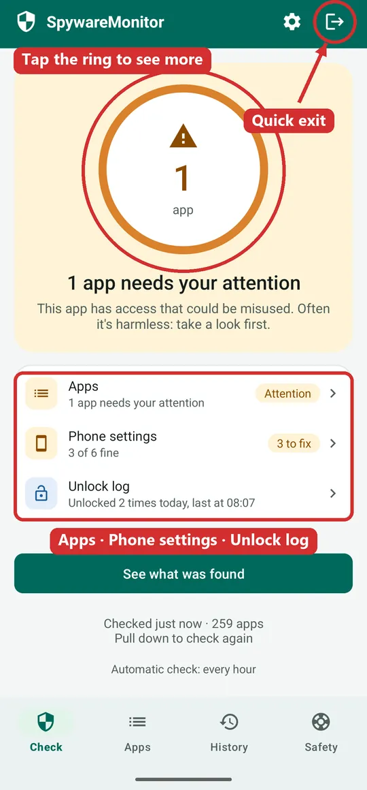
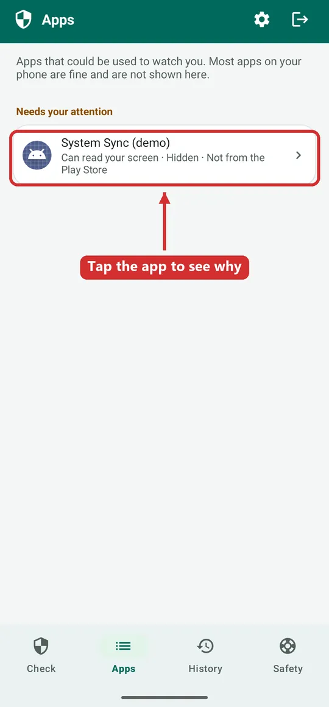
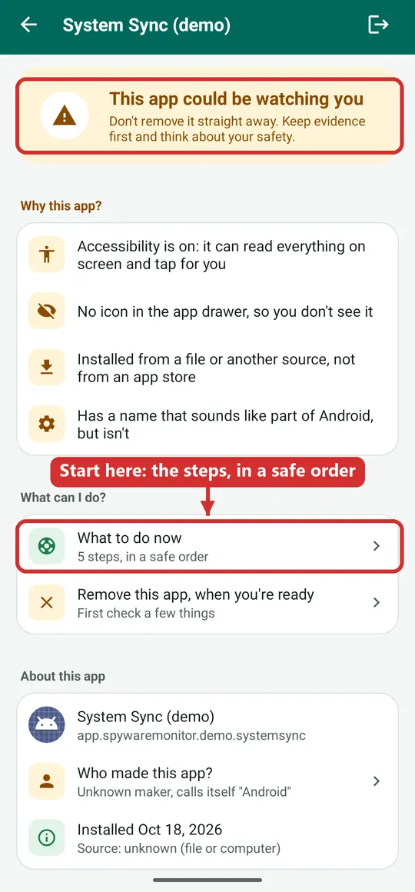
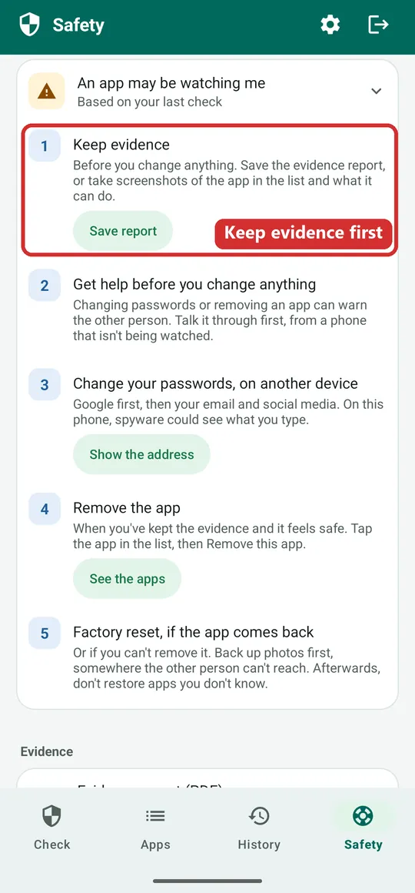
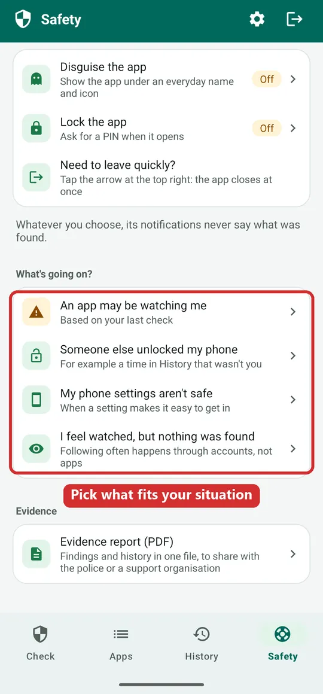
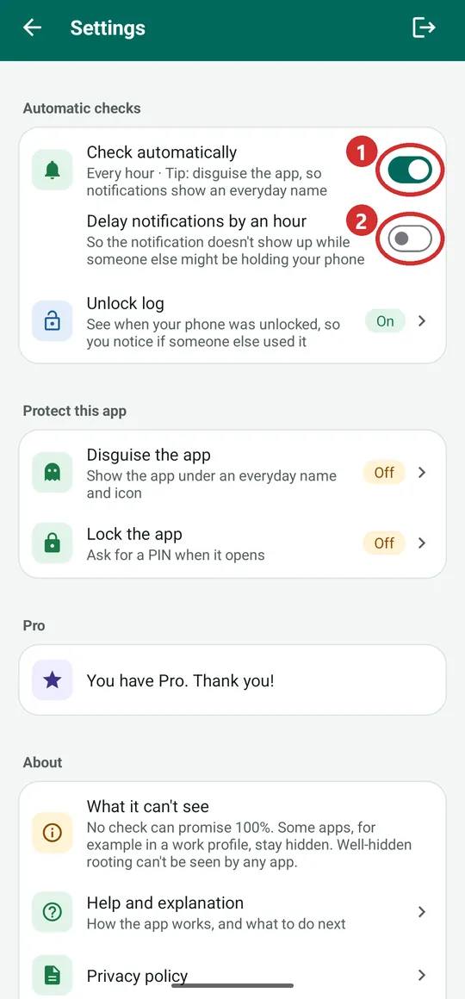
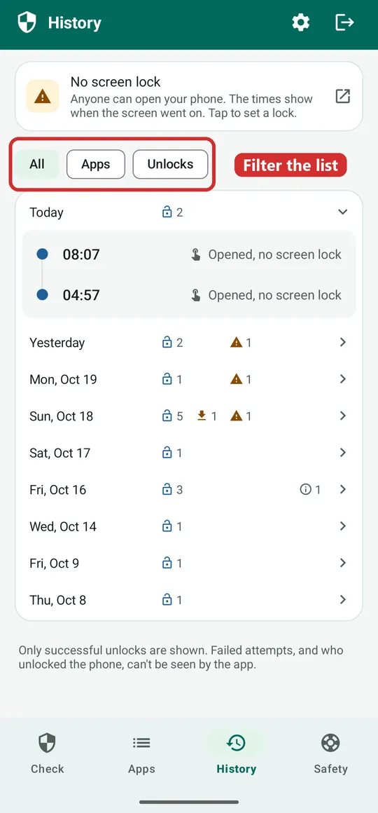
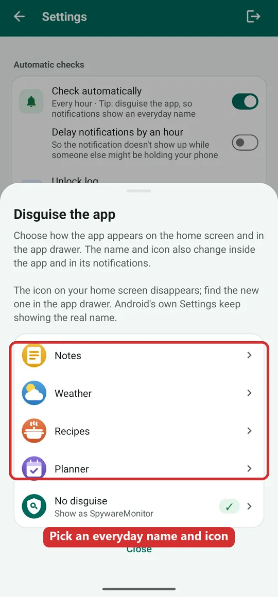
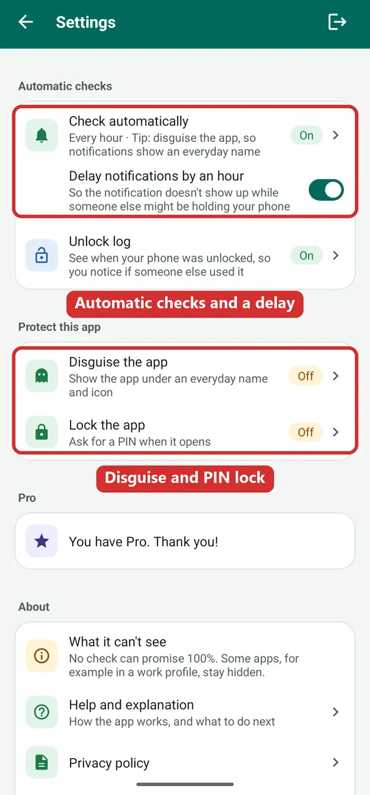

SpywareMonitor help: check your phone for spyware, step by step
For anyone who worries that someone, such as a partner or ex, is secretly watching their Android phone. Plain words, one question at a time.
Take your time. Checking your phone changes nothing on it, and nobody gets a message that you checked. If you are in danger right now, call the police.
Prefer to watch? See the app in 83 seconds
This short video shows the most important parts: the check, what orange and red mean, why you shouldn't remove an app straight away, and the steps in the Safety tab.
The video only loads from YouTube when you press play. Watch it on YouTube instead.
What does SpywareMonitor do?
SpywareMonitor looks at the apps on your phone and asks one question: could this app be used to watch you? It checks:
- Every installed app: can it read your screen or your notifications, does it hide its icon, was it installed from a file instead of an app store, does it pretend to be part of Android?
- A list of known spyware (also called stalkerware), from Echap (CC BY 4.0). The list is built into the app.
- Your phone settings: is there a screen lock, are USB debugging and Developer options off, can other apps install apps? Are there signs that the phone is rooted?
Does anything leave my phone?
No. The app has no internet permission, so it can't send anything anywhere. Not to us, not to anyone. Read more in the privacy policy.
What can't it do?
- No check is 100% sure. Some apps, for example in a work profile, stay hidden, and brand-new spyware may not be on the list yet. Well-hidden rooting can't be seen by any app.
- It can't see your accounts. Someone can follow you through your Google account, shared location or a tracker tag, without any app on your phone. See I feel watched, but nothing was found and the guide Can someone track your phone without spyware?
- It never removes or changes anything by itself. You decide.
How do I read the Check screen?
Open the app and it checks your phone in a few seconds. The big ring shows the result:
- Green: nothing was found that could watch you.
- Orange: an app has access that could be misused. Often it's harmless, like a password manager or a smartwatch app. Take a look first.
- Red: an app is on the list of known spyware.
Below the ring are three cards:
- Apps: how many apps need your attention.
- Phone settings: how many settings make it easy for someone to get in.
- Unlock log (Pro): when your phone was unlocked today.
Tap the ring, or Apps, to see what was found. Pull the screen down to check again.

Which app was found, and why?
The Apps tab lists only apps that could be used to watch you. Most apps on your phone are fine and are not shown.
Under each app you see in a few words what it can do, for example Can read your screen · Hidden · Not from the Play Store. Tap the app to see all the reasons, who made it, and when it was installed.
Do you know the app, because you put it there yourself? Then you can mark it as known. It then no longer counts, and you are told if it is ever replaced by someone else's version.
Want to look yourself, without the app? Read how to find hidden apps on Android.

Something was found. What do I do now?
Don't remove the app straight away. Removing it, or changing your passwords, can warn the person who put it there. That can make things more dangerous. Keep evidence first and think about your safety. More in the guide What to do if you find spyware on your phone.
On the app's page, tap What to do now. You get the steps in a safe order:
- Keep evidence: save the evidence report, or take screenshots of the app and what it can do.
- Get help before you change anything: talk it through with someone you trust, the police or a support organisation, from a phone that isn't being watched.
- Change your passwords, on another device: Google first, then your email and social media. On this phone, spyware could see what you type.
- Remove the app, when you've kept the evidence and it feels safe.
- Factory reset, if the app comes back or can't be removed. Back up your photos first, somewhere the other person can't reach.

Each step has a button that takes you to the right place, such as Save report or See the apps.

What's going on? Pick your situation in the Safety tab
Open the Safety tab. Under What's going on?, tap what fits. The app already suggests one, based on your last check.

An app may be watching me
For when the check found something. You get the five steps above: keep evidence, get help, change passwords on another device, remove the app, factory reset if it comes back.
Someone else unlocked my phone
For example when History shows an unlock at a time you didn't have your phone. The steps:
- Change your PIN (or set a screen lock if you have none). Pick one the other person can't guess: not a birthday, not your old PIN with one digit changed.
- Close the other ways in: remove fingerprints and faces you don't know, and turn off Smart Lock or Extend Unlock.
- Let the screen lock sooner: after 30 seconds, so the phone is locked when you put it down.
- Look at what happened then: History shows which apps came or got access around that time.
- Run a check now, to see whether an app was put on your phone.
My phone settings aren't safe
Some settings make it easy for someone to get into your phone and secretly install apps. You see each one with a Fix this button that opens the right place in your phone's settings. For example: set a screen lock, turn off USB debugging, turn off Developer options.
If the app finds signs that the phone is rooted, you see This phone may be rooted. Rooting gives apps full control of the phone, spyware too. If you didn't do this yourself, ask someone you trust to look at it. This line only appears when signs are found.
I feel watched, but nothing was found
Following often happens through accounts, not apps. The steps:
- Stop sharing your location in Google Maps (your profile picture, then Location sharing). Check family locator apps too.
- Check the devices on your Google account and sign out any you don't know.
- Check your recovery email and number. If they aren't yours, someone else can get into your account.
- Look for a hidden tracker: a small tag in a bag or car can show where you are. In Settings, open Safety and emergency, then Unknown tracker alerts, and tap Scan now.
Do account changes on another phone or computer, one the other person can't reach.
What does SpywareMonitor Pro add?
Pro is one payment, no subscription. Still no internet and no ads. It adds:
Automatic checks
The app checks by itself, every hour, so a new app is noticed the same day. Go to Settings (the gear at the top) and switch on Check automatically (1). The first time, the app first shows you how its notifications look.
You only get a notification when something needs a look. It never says what was found and never uses the word spyware: it only shows the app's name and Tap to open.
With checks on, a second switch appears: Delay notifications by an hour (2). Use it if someone else might be holding your phone when a notification would appear.
Good to know: Android always shows the app's real name at the top of a notification. So also disguise the app and lock it with a PIN.

Unlock log
Spyware is usually put on a phone while someone has it unlocked in their hands. The unlock log shows when your phone was unlocked, so you can see if it happened while you weren't there. It only shows successful unlocks: not failed attempts, not what was done and not who did it. You allow it yourself in Android (Usage access), and can switch it off there at any time.
Evidence report (PDF)
All findings and the history in one PDF file, to show the police or a support organisation. It is made in the language the app is in: English, Norwegian or Dutch. The app makes it on your phone and opens Android's share menu; you decide where it goes. Find it in the Safety tab under Evidence.
Disguise and PIN lock
See How do I keep this private? below.
How do I use History?
The History tab shows, day by day, when apps were installed, got access or were removed, and (with the unlock log on) when your phone was unlocked.
Use the buttons at the top to show All, only Apps, or only Unlocks. Tap a day to see the times.
Look for an unlock at a time you didn't have your phone, just before an app was installed.

How do I keep this app private?
- Quick exit: tap the arrow at the top right. The app closes at once and stays out of recent apps. This website has a red Quick exit button too.
- Disguise the app (Pro): it then shows as Notes, Weather, Recipes or Planner, with an everyday icon, on your home screen, in the app and in its notifications. Android's own Settings keep showing the real name.
- Lock the app (Pro): ask for a PIN, or your fingerprint, when it opens. Only use your fingerprint if no one else's fingerprint is saved on the phone.
- Payment: Google's purchase receipt email and your Google Play order history always name the app. Keep that in mind if someone else can read your email or Google account.
- This website: visiting it shows up in your browser history. Open it on another device if that is safer.

You find Disguise and Lock in Settings (the gear at the top) under Protect this app, and at the top of the Safety tab.

Where can I get help?
You don't have to deal with this alone. Help is free, and you can stay anonymous. Call from a phone that isn't being watched.
- In danger right now? Call the police: 112 in Europe.
- Norway: Vold- og overgrepslinjen, 116 006, free and anonymous, day and night.
- Netherlands: Veilig Thuis, 0800-2000, free and anonymous, day and night.
- Elsewhere: the police, or a domestic violence helpline in your country.
Bring the evidence report or your screenshots. They help the police or a support worker to understand what happened.
More guides
- How to check an Android phone for spyware — what to look at, and what a scan can and cannot prove.
- How to find hidden apps on Android — the full app list, apps without an icon and special access.
- What to do if you find spyware on your phone — safety first, evidence, and getting help.
- Can someone track your phone without spyware? — accounts, location sharing, linked devices and trackers.
Questions about the app?
Read what SpywareMonitor is, the privacy policy, or contact us.